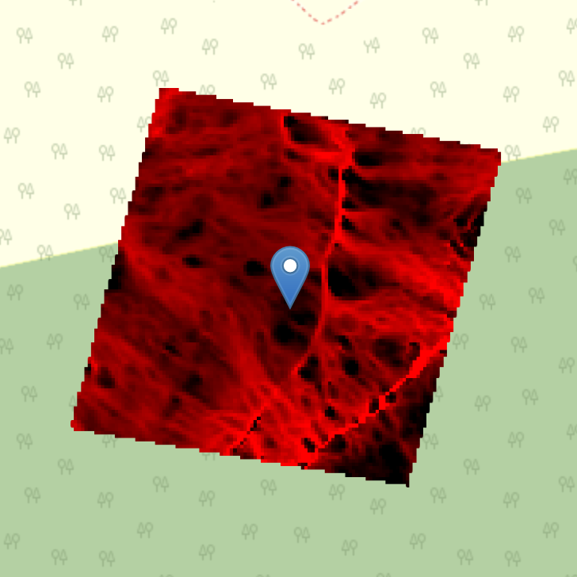

Soil moisture is a critical variable in both ecological and hydrological systems. It influences plant growth, microbial activity, nutrient cycling, and the rate of carbon sequestration. At the Lamont Sanctuary Forest, researchers are monitoring soil moisture levels as a way to understand both the ecological functioning of the forest and the physical drivers of soil carbon change. Because moisture varies significantly by elevation, slope, and season, it is a highly spatially and temporally dynamic property.
In the 2024 campaign, Lamont researchers used handheld sensors and digital probes to collect soil moisture data at multiple depths and across dozens of sampling points. These measurements are supplemented by topographic wetness index (TWI) values calculated from digital elevation models (DEM), offering a proxy for potential moisture accumulation zones. Together, these datasets help map moisture variability across the forest and predict its influence on both tree growth and soil respiration.
Moisture is also a key covariate in many of the machine learning models used to estimate soil carbon and greenhouse gas (GHG) fluxes. In dry zones, carbon decomposition slows down, potentially increasing long-term storage. In wetter zones, microbial activity may increase CO₂ or CH₄ emissions. Understanding these dynamics is essential to modeling ecosystem responses under climate change, and for designing land use practices that optimize carbon storage.